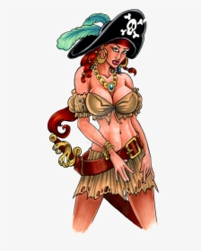
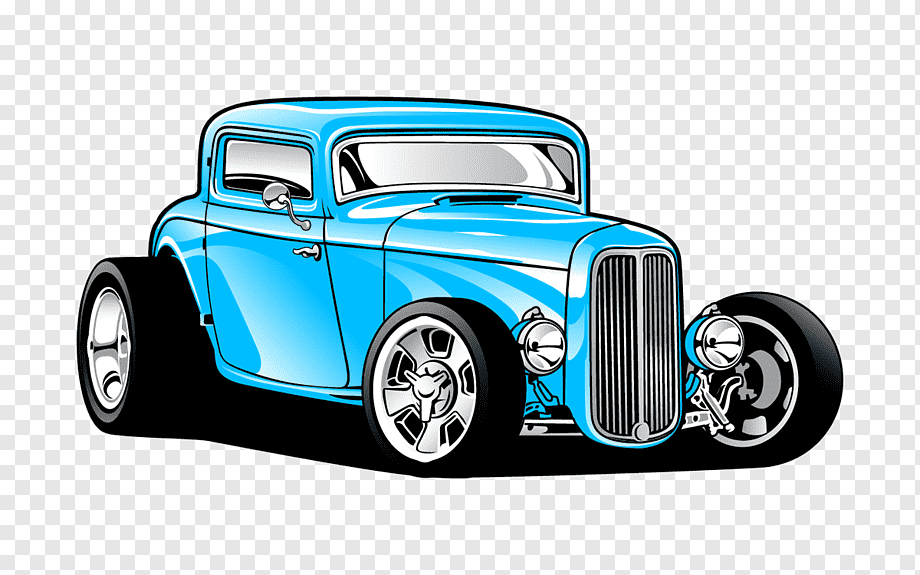
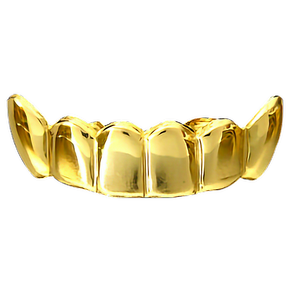

HAPPY BIRTHDAY
BEST FRIEND.
TO UNCLE MOMO FROM NORAH
Hey so im in a bad mood right now cus i mistakenly deleted the index file for this web page and it took me like 3 days to do it thats what i wanted to tell you yesterday but i didnt want to ruin the suprise so i deleted it... its so freaking painful guy.... anyways happy birthday momo , to make it worse i even wrote a poem ps# dont forget to tap play on the instrumental, anyways i'll be fine so happy birthday to the coolest person i know and i mean this literally, i wish you everything you wish yourself , honestly i thought long and hard about what to get you for your birthday but i only came up with two things a letter and a hand made knitted sweater then i was like if i get you the seater you would have to wait for months to get it so i decided to do the only thing im good at ... writing out long texts sooo
again happy birthday may the good lord bless you and keep you , i hope you never change cus meeting you is one of the best things that has happened to me in the past decade . okay back to business this is actually a read me so imgonna tell you what to do , now youre free to tap any of the icons on the side bar itll take you to the next page, if you scroll down you would see a list of all your birthday presents that i cannot afford in real life presently cus im a broke gal so i made it virtual dont worry your 3 concubines are intact.im not much of a writer but i was able to salvage some things from the former poems i wrote that was deleted,
On your birthday I wish you much pleasure and joy;
I hope all of your wishes come true.
May each hour and minute be filled with delight,
And your birthday be perfect for you!
On your birthday every year,
I thank the stars you were born,
With you as my best friend,
My life's all candy and popcorn.
As each year brings new tests,
I know how glad I feel,
You've got my back every day,
Our friendship's as strong as steel.
Birthdays come and birthdays go,
Another year of yours has just begun,
This message is sent to let you know,
In the Friends department, you're #1.
again
HAPPY BIRTHDAY MOMO
i wouldnt trade you for the world ##
- wishes
- 
- 
- 